How one fundamental science reaches into living bodies, hospitals, the cosmos, the Earth, the climate and the computer.
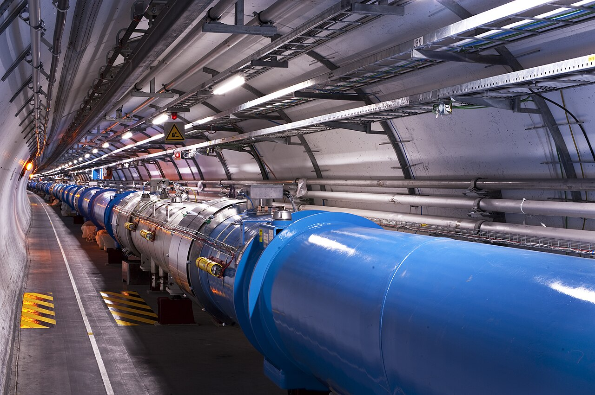
It refers to the integration and interaction of physics with various other fields of study.
Physics is a fundamental science: it does not study one particular kind of thing — biology studies life, geology studies rocks. Physics studies how matter, energy, waves and fields behave, which is why its laws, its methods and its instruments can be pointed at anything at all.
Mathematics, conservation laws and dimensional analysis. The same equation that describes a current in a wire describes blood in an artery.
Lasers, magnets, vacuum, detectors and sensors — invented in physics laboratories, now standard equipment in hospitals, observatories and weather stations.
It describes biological systems and processes using the principles and techniques of physics — the cell, the tissue and the organ treated as machines made of matter.
The mechanics of muscles and bones, how molecules move and exert force, how blood flows, how membranes stretch, how nerves carry electrical signals, how proteins fold.
Newton’s laws on a lever arm, fluid dynamics in a capillary, thermodynamics in a folding protein, electromagnetism in an ion channel, optics in the eye.
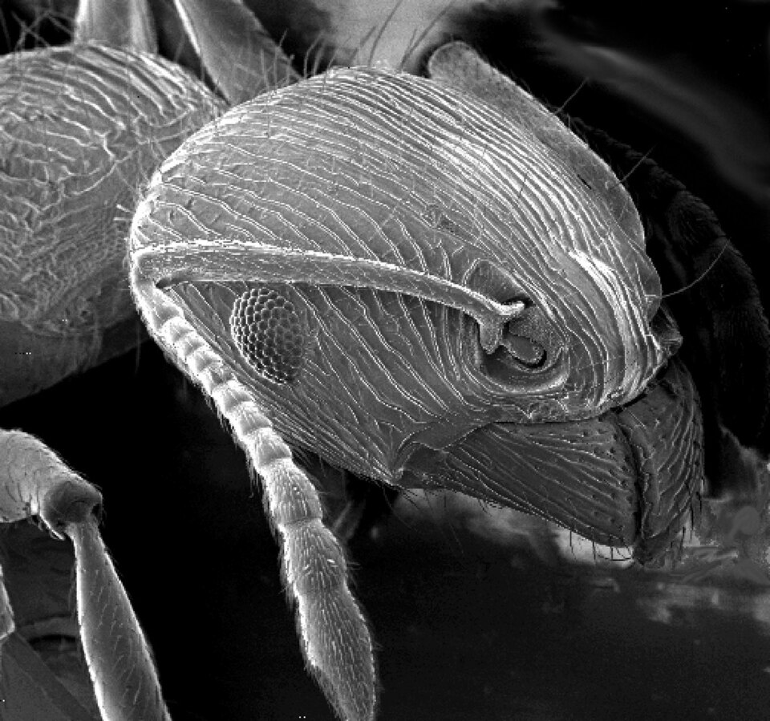
A single cell has no pump and no lungs. It gets its oxygen by diffusion alone. How long does that take — and what happens if you scale it up to a whole animal?
Diffusion spreads a substance over a distance L in roughly
t ≈ L² / 2D with D(O₂ in tissue) ≈ 2 × 10−9 m²/sL = 1 × 10−5 m, so
t = (10−5)² / (2 × 2 × 10−9) = 0.025 s ≈ 25 msL = 0.1 m, so
t = (0.1)² / (4 × 10−9) = 2.5 × 106 s ≈ 29 daysDiffusion is only practical across micrometres. So cells stay tiny, blood does the long-distance carrying, and a 10 cm lump of tissue would starve at its centre long before the oxygen arrived.
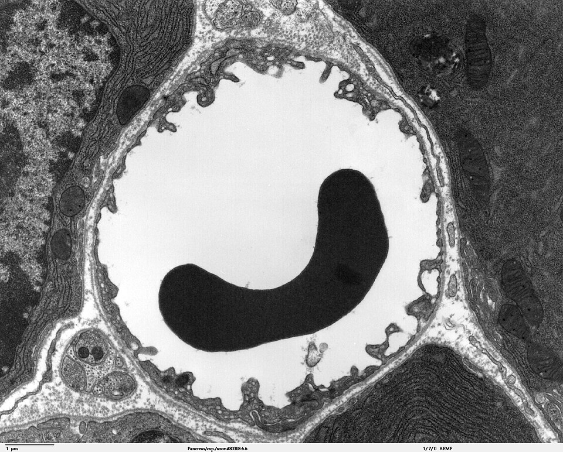
It applies physical principles to build techniques and technologies for diagnosis and treatment — waves, radiation and magnetism pointed at the human body, then read back as information.
X-rays & CT measure how a beam is absorbed on its way through; ultrasound listens for echoes bouncing off boundaries between materials; MRI watches hydrogen nuclei precess in a 1.5–3 tesla magnetic field; PET catches the two photons made when a positron meets an electron.
A linear accelerator steers electrons at a tumour. Thanks to the Bragg peak, the beam deposits most of its dose at exactly the depth of the tumour and little in the tissue in front — everything else is dosimetry: energy absorbed per kilogram, in gray.
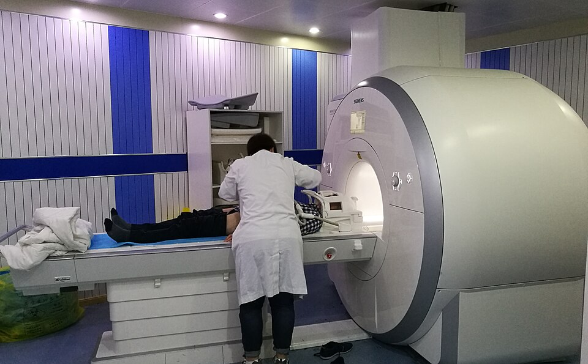
On a radiograph, bone is white and muscle is grey. Both are hit by exactly the same beam — so the difference is pure physics.
Every centimetre of tissue absorbs a fixed fraction of the beam, so the intensity falls off exponentially:
I = I₀ · e−μx (μ = attenuation coefficient)Soft tissue is mostly water (Z ≈ 7); bone is loaded with calcium (Z = 20), which absorbs far harder:
μmuscle ≈ 0.21 cm−1 · μbone ≈ 0.9 cm−1Muscle: e−1.07 ≈ 0.34. Bone: e−4.5 ≈ 0.011.
muscle 34% gets through · bone 1.1% gets throughOver the same 5 cm, bone transmits about 30× less beam than muscle — the detector records almost nothing there, so it prints white. (Half-value layer: 3.2 cm of muscle, but only 0.8 cm of bone, to halve the beam.)
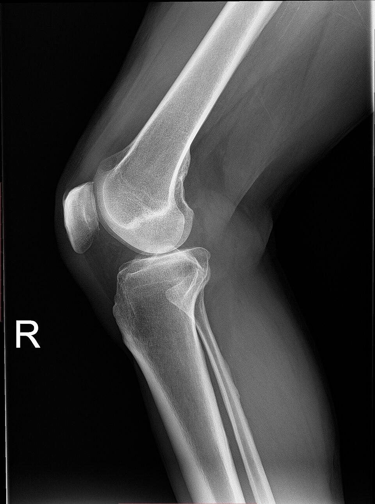
It deals with the physical properties and processes of celestial bodies and phenomena — matter and energy on the largest scales, tested against the one universe we are allowed to experiment on.
How stars ignite and die, what planets and galaxies are made of, what happens where gravity is extreme, how the universe expands — and where all the heavy elements came from.
Gravity shapes orbits and tides; nuclear physics lights the stars; thermodynamics & radiation turn starlight into temperature and chemical composition (spectroscopy); relativity bends light and keeps GPS honest.
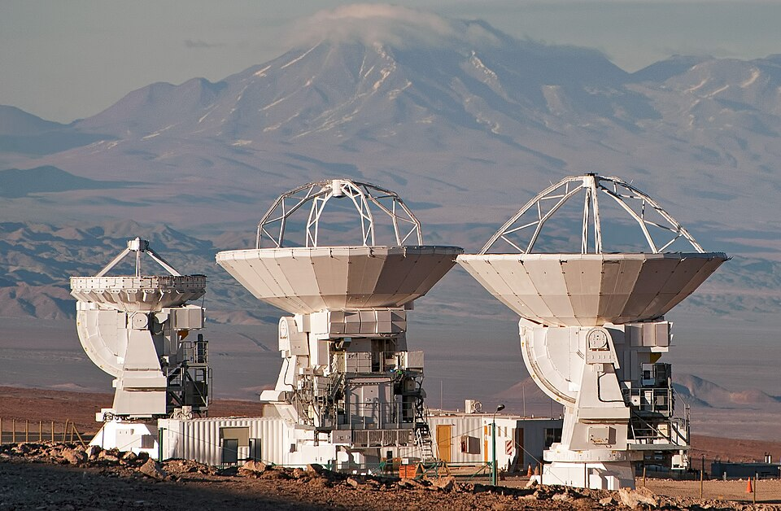
In July 1054 astronomers recorded a “guest star” bright enough to see in daylight. Today we photograph its wreckage — and two measurements fall out of one picture.
c = 3.00 × 108 m/s, and the Crab is about 6,500 light-years away (6.15 × 1019 m):
t = d / c = 6.15×1019 / 3.00×108 = 2.05×1011 s ≈ 6,500 yearsThe light arrived in 1054, so the explosion itself happened about 6,500 years earlier — around 4,500 BC. 1054 is just our postmark.
The debris still flies outward at ≈ 1,500 km/s. Over 972 years (1054 → 2026):
r = vt = 1500 km/s × 3.07×1010 s = 4.6×1013 km ≈ 4.9 ly radiusOne number comes from the speed of light (distance, and how far into the past we are looking); the other from the speed of the gas (size). Both are read off a single photograph.
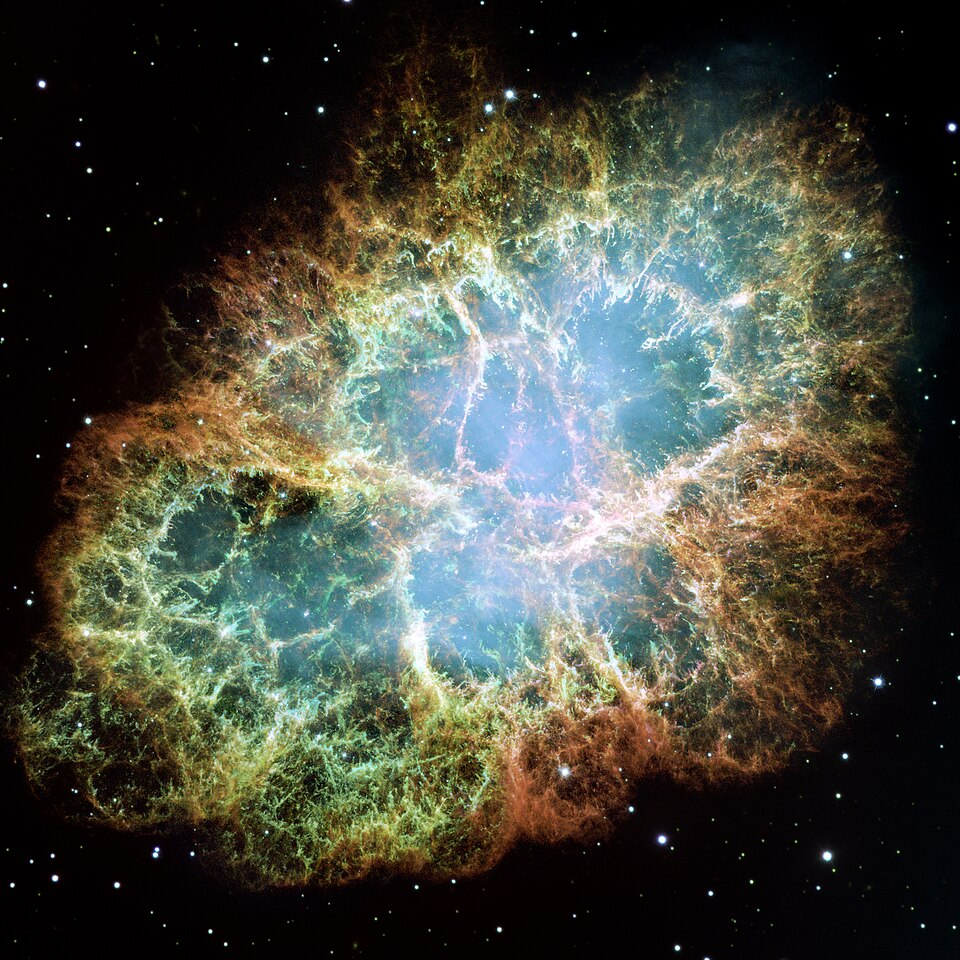
It applies physical principles to the Earth’s internal structure, its magnetic and gravitational fields, seismic activity, volcanoes and more — a planet we can never open up, so we listen to it instead.
The layered interior — crust, mantle, liquid outer core, solid inner core; the convection that drives plate tectonics; gravity anomalies that betray hidden density; the magnetic field generated by circulating molten iron.
Seismology is elastic wave propagation; gravity surveys are Newton’s law; heat flow is thermodynamics; the geodynamo is electromagnetism; rock fracture is plain mechanics.
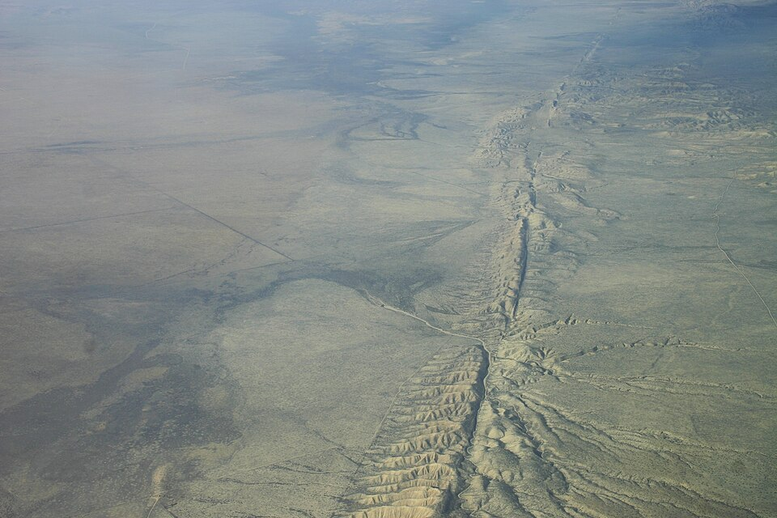
Two waves leave the same fault at the same instant. The gap between their arrivals tells you how far away the quake was — no satellite, no GPS, just a clock.
P waves squeeze and stretch the rock — fast, ≈ 8 km/s. S waves shake it sideways — slow, ≈ 4.5 km/s.
For a distance d the arrivals are tP = d/8 and tS = d/4.5, so the gap grows in a straight line:
Δt = d (1/4.5 − 1/8) = 0.097 d (d in km, Δt in seconds)A station logs S arriving 60 s after P:
d = 60 / 0.097 ≈ 620 km from the faultof gap. Three stations, three circles of that radius, and the crossing point is the epicentre. Bonus: S waves vanish beyond ≈ 104° from the quake because they cannot travel through liquid — that is how we discovered the outer core is molten.
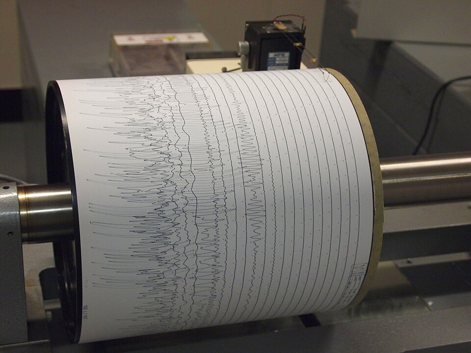
It involves the study of physical processes in the environment — atmospheric dynamics, climate change and weather — all of it ruled by energy coming in and energy going out.
Where Earth’s energy comes from and where it goes; how greenhouse gases absorb and re-emit infrared; winds and storms as fluid flow; clouds, ice and water vapour as feedbacks that either dampen or amplify a change.
Planck & Stefan–Boltzmann radiation laws; the thermodynamics of phase change (the latent heat of condensation is what a hurricane runs on); Navier–Stokes for the atmosphere; and quantum mechanics, which decides exactly which wavelengths CO₂ and H₂O absorb.
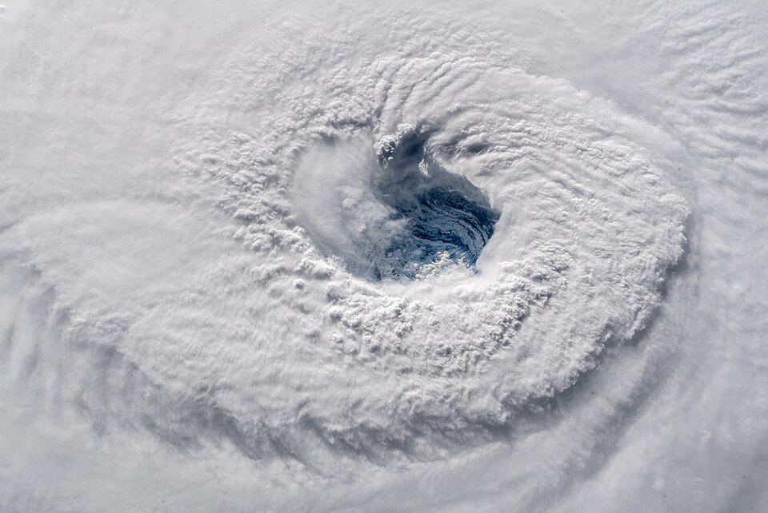
The solar constant, the albedo and one radiation law are enough to predict the temperature of a planet. Run it on Earth.
S = 1361 W/m² falls on the disc, but the planet is a sphere — divide by 4 — and albedo α = 0.30 sends 30% straight back:
absorbed = (1 − α) S / 4 = 0.70 × 1361 / 4 = 238 W/m²A blackbody radiates P = σT⁴, with σ = 5.67 × 10−8 W m−2 K−4:
T = (238 / 5.67×10−8)¼ = (4.20×109)¼ = 255 K = −18 °CThe observed global mean is 288 K, i.e. +15 °C. The model is missing 33 degrees.
That missing 33 kelvin is the greenhouse effect: −18 °C with no atmosphere — ice everywhere — versus the +15 °C we actually live in. It comes from a few hundred parts per million of trace gases whose quantum energy levels were measured in a laboratory.
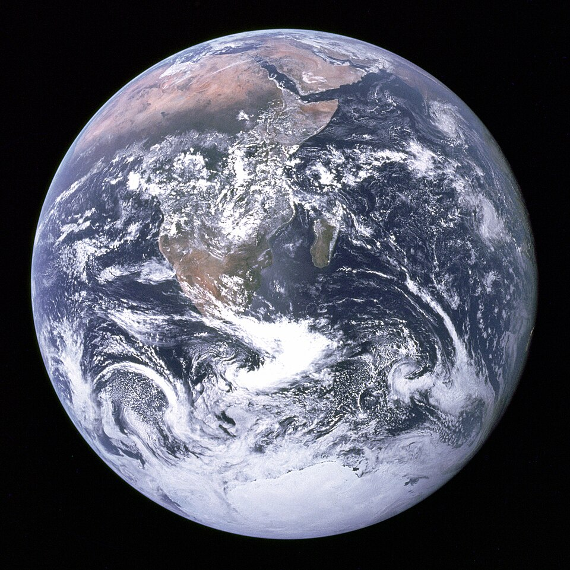
It uses numerical methods and computer simulations to solve physical problems that cannot be solved on paper — turning equations into steps a machine can run.
Discretise space and time into a grid, march the equations forward one step at a time, sample randomly with Monte Carlo when the geometry is hopeless, solve the resulting huge systems of linear equations, then visualise the answer so a human can see it.
The three-body problem, turbulent flow, quantum many-body systems, fusion plasmas, earthquakes, the climate — all of them resist pen and paper. The physics is unchanged; only the method of solving it is new.
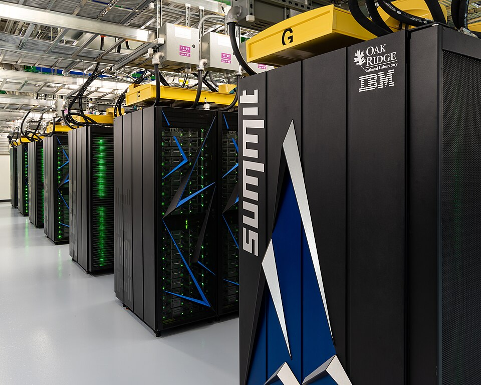
A skydiver’s equation has no tidy solution once drag is proportional to speed. Don’t solve it — step it. This is the whole idea of the field, by hand.
With g = 9.8 m/s² and drag term b/m = 0.5 s⁻¹:
dv/dt = g − (b/m) v → vterminal = 9.8 / 0.5 = 19.6 m/svn+1 = vn + (9.8 − 0.5 vn)·Δt, Δt = 1 s, starting from rest:
0 → 9.8 → 14.7 → 17.2 → 18.4 … (m/s)v(t) = 19.6 (1 − e−0.5t), so at t = 1 s the truth is 7.7 m/s while Euler says 9.8 —
error = (9.8 − 7.7) / 7.7 ≈ 27% with Δt = 1 sHalve Δt and the error collapses — that is convergence. A computer runs 1,000,000 such steps in a second, and the identical trick scales all the way up to fusion plasmas and weather forecasting.
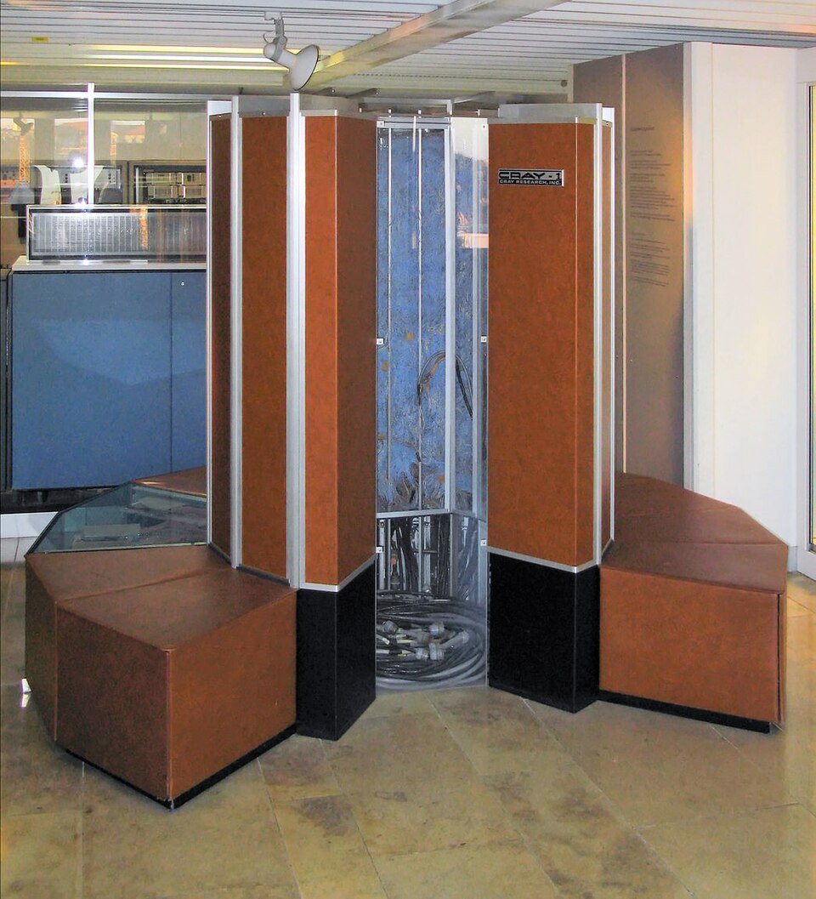
Physics supplies the principles, the mathematics and the instruments. The other disciplines supply the questions. Six fields, six problems — and every one of them was solved with the same physics you already know.
The point of “interdisciplinary”: nothing about the method changes. A conservation law in a hospital is the same conservation law in a hospital as in a galaxy — only the units and the scale are different.
All photographs come from Wikimedia Commons and are reproduced under the licence shown. Values used in the worked examples are standard textbook constants.
| Board | Photograph | Author | Licence | Source |
|---|---|---|---|---|
| Title | LHC tunnel, sector 3–4 | Maximilien Brice (CERN) | CC BY-SA 3.0 | Wikimedia Commons |
| 01 Biophysics | Ant head, electron micrograph | U.S. Geological Survey | Public domain | Wikimedia Commons |
| 01 Example | Red blood cell in a capillary (TEM) | Louisa Howard | Public domain | Wikimedia Commons |
| 02 Medical | Siemens Magnetom Aera MRI | Ptrump16 | CC BY-SA 4.0 | Wikimedia Commons |
| 02 Example | Plain radiograph of a knee | Ptrump16 | CC BY-SA 4.0 | Wikimedia Commons |
| 03 Astrophysics | ALMA array at night | ESO / José Francisco Salgado | CC BY 3.0 | Wikimedia Commons |
| 03 Example | The Crab Nebula (Hubble) | NASA/ESA, Hester & Loll | Public domain | Wikimedia Commons |
| 04 Geophysics | San Andreas Fault, Carrizo Plain | Ikluft | CC BY-SA 4.0 | Wikimedia Commons |
| 04 Example | Seismogram, Weston Observatory | Z22 | CC BY-SA 3.0 | Wikimedia Commons |
| 05 Climate | Hurricane Florence from the ISS | Alexander Gerst (ESA/NASA) | Public domain | Wikimedia Commons |
| 05 Example | The Blue Marble, Apollo 17 | NASA | Public domain | Wikimedia Commons |
| 06 Computational | Summit supercomputer | Carlos Jones / ORNL | CC BY 2.0 | Wikimedia Commons |
| 06 Example | Cray-1, Deutsches Museum | Clemens Pfeiffer | CC BY 2.5 | Wikimedia Commons |
Constants used: c = 3.00 × 10⁸ m/s · D(O₂ in tissue) ≈ 2 × 10⁻⁹ m²/s · μ at 60 keV after NIST XCOM · S = 1361 W/m², α = 0.30 · σ = 5.67 × 10⁻⁸ W m⁻² K⁻⁴ · Crab Nebula ≈ 6,500 ly and ≈ 1,500 km/s · P ≈ 8 km/s, S ≈ 4.5 km/s.